Exam Like Questions: Module 11
Lecture 25
T/F
1) The ground state of all atoms is zero energy.
Answer: False
Rest Mass: 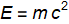
Examples__________________________________________________
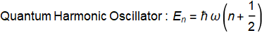 where n=0,1,2,3,4,...
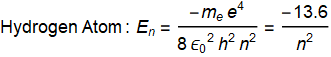 where n=1,2,3,4,...
2) The larger the frequency of a photon the smaller is its energy.
Answer: False
Photon Energy: E=h f
Multiple Choice
1) A particle moving at 3.3 x m/s and has a mass of 1.67 x kg has a de Broglie wavelength of a) 1.20 nm, b) 1.20 pm, c) 1.20 fm, or d) 0.191 pm.
Answer: B
DeBroglie Wavelength: 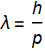
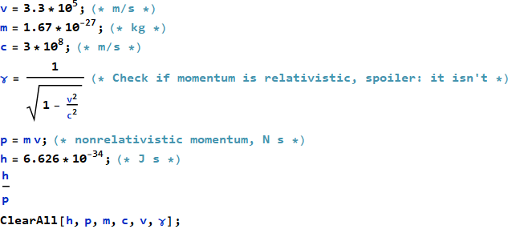
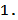
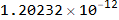
2) A hydrogen atom drops from the third energy level to the ground state and emits a photon of wavelength a) 657.7 nm, b) 122nm, c) 103 nm, or d) 823 nm.
Answer: C
where n=1,2,3,4,...
“The energy is expressed as a negative number because it takes that much energy to unbind (ionize) the electron from the nucleus.”
In other words, it is the convention that we set. This makes sense because the energy released (photons) from an electron going from higher state to lower state is positive.
Energy of a Photon: 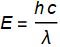 or wavelength 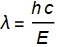
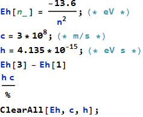
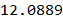
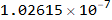
Useful Exercises
1) The human eye is sensitive to wavelengths from about 400 nm to 700 nm. What is the corresponding range of photon energies given both in units of J and eV.
Answer:
= 3.10 eV = J
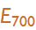= 1.77 eV = J
Photon Energy:
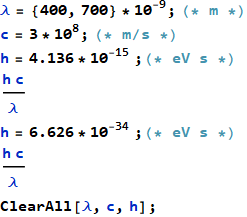
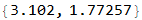
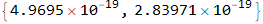
2) An electron is moving in the +x direction with a measured speed of 50 Mm/s, accurate to + 10%. What is the minimum uncertainty in its position?
Answer: Δx ≥ m
h ≤ Δx Δp → h ≤ Δx 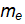Δv
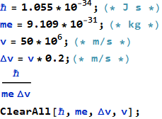
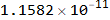